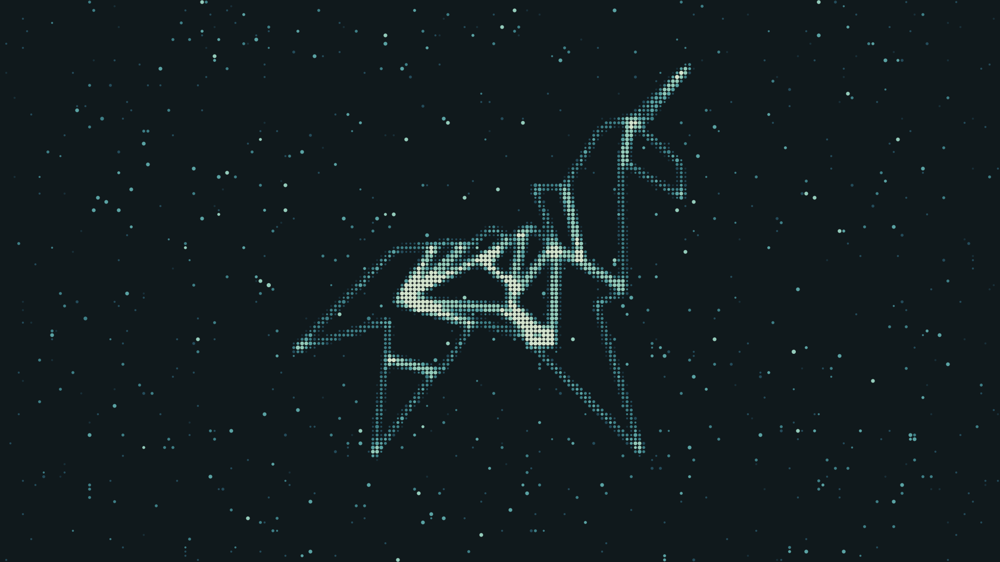
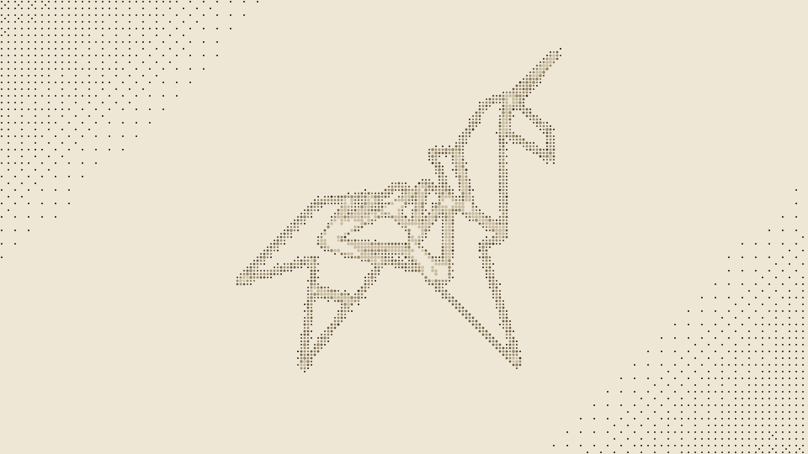
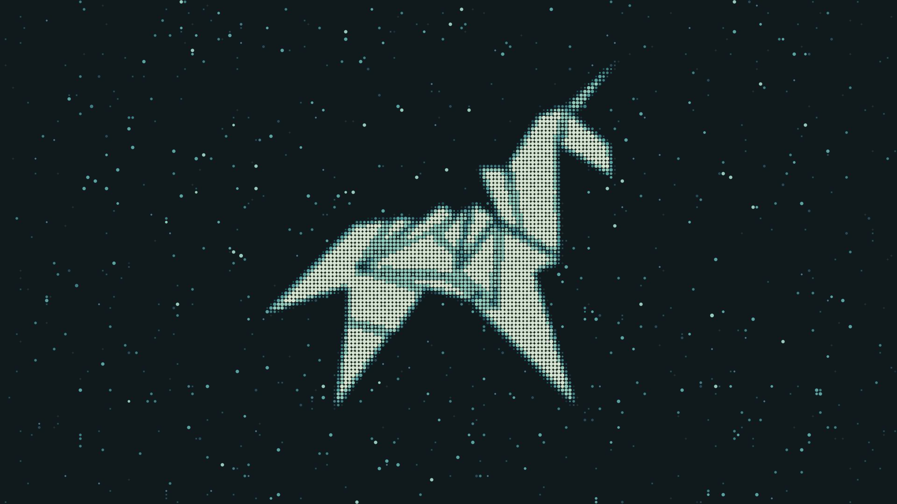
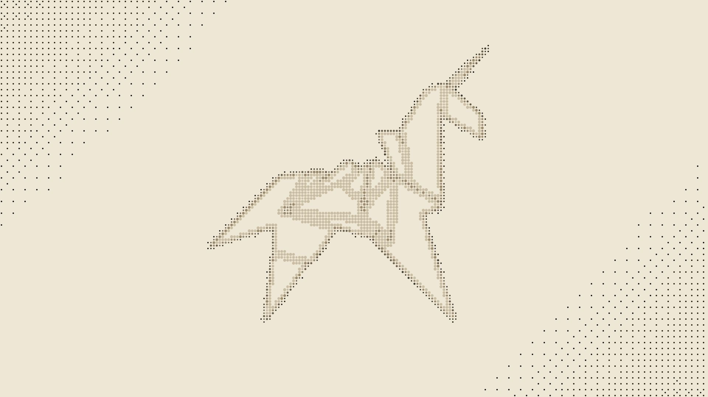

ESTUDIO 11 · REFERENCIAS DEL USUARIO
Las tres versiones del unicornio pasadas por el pipeline (medición de tinta, paleta Marea mineral) y renderizadas con capas del motor: estrellas, lavado, viñeta en oscuro; grano y lavado en papel.
Los archivos de origen quedan fuera del repositorio: acá sólo vive el derivado.



